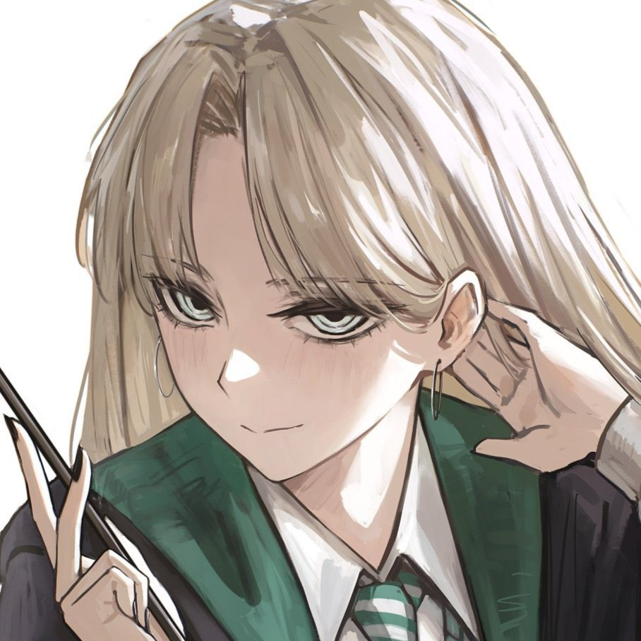

Ancient Magic, sometimes called old magic, is the oldest branch of magic in . It is older than wandlore and does not wholly answer to wands: it is less cast than invoked, and most of its workings will not take hold until something real has been given for them, whether a promise, a trust, a need, an honest intent or a life.
Its one law, as taught it to , is that ancient magic answers to what is given and resists what is taken. The protection left her son by dying for him is its purest working on record. (article) ’s Horcruxes are the same magic run backwards: a soul torn apart by taking a life, where Lily’s was sealed by giving one., “The Lessons” The war between them, from to the Battle of Hogwarts, was in part a war between those two directions.
Nature
Ordinary spellwork is learned: a wand shapes the caster’s will through an incantation and a movement that can be practised until they are right. Ancient magic cannot be learned that way. It cannot be studied out of a book into working order, it cannot be forced, and it cannot be bought. Its oldest workings were made before wands were common, and many of the enchantments that still hold together are of this kind. The castle’s habit of answering need, the Room that becomes whatever its seekers require and the sword that comes to whoever has earned it, is ancient magic going about its business., “Dumbledore’s Army”
It lingers. Where it has been worked strongly, a trace remains in the place itself, sometimes for centuries. Older accounts describe a rare few witches and wizards who could sense those traces, see them, and even draw on them directly. If anyone of that kind lived in Harry Potter’s time, they left no record of it. The same accounts agree on one warning: those who tried to seize ancient magic and hoard it for themselves were ruined by it.
What it binds to matters more than how strongly it is willed. A working sealed by a gift holds exactly as long as the gift does, and can spend no more than was given. was sealed by one life, and every time it turned death aside it used up part of what that life had bought, until it was spent at the Battle of Hogwarts.
The given and the taken
What is given

Ancient magic binds most strongly to what is offered freely. , formally Ultima Custodia, can be sealed only by a death freely given for another, chosen while another way still lies open, which is why it is so rare. The blood bond laid at rooted that protection in a house, and held because gave her sister’s son a home, however grudgingly., “The Seven Potters”
The Unbreakable Vow binds because both parties swear it of their own will. ’s Vow with was made out of love for her daughter, and it held to the end: when could not kill Dumbledore on the Astronomy Tower, Snape did it for her., “The Tower” The Fidelius Charm hides a secret inside a single person, and holds only as long as the trust given to that Secret-Keeper does. The Potters gave theirs to , and he sold it. (article), “Worlds Apart”
What is needed, and what is meant
Some of its workings answer to need or to worth rather than to sacrifice. shows a person what they most desire, and in Harry’s first year it gave up the Philosopher’s Stone only to someone who wanted to find it and not to use it., “Quirrell” The Room of Requirement becomes whatever its seekers need, and sheltered for a year.
The goblin-made sword of Gryffindor comes out of the Sorting Hat for whoever needs it and has the courage to draw it. Harry drew it in the Chamber of Secrets at twelve, and drew it out of the burning Hat at the Battle of Hogwarts and killed Nagini with it., “The Chamber”, “The Last Stand”
The Ministry’s Time-Turners were the strangest of these workings. Turned, a Time-Turner does nothing unless an injustice is being done nearby, and then it runs time backward for that one wrong alone, choosing for itself what to undo. Hermione Granger’s never moved for her timetable, and answered twice on the night it saved Buckbeak and Sirius Black., “The Time-Turner” The last of them were destroyed at the Department of Mysteries in 1996., “The Department of Mysteries”
What is taken
Ancient magic can be worked in reverse, at a terrible cost. A Horcrux is made by murder: the killer takes a life and tears his own soul to store a piece of it. Voldemort made several, and they fed his power as well as anchoring his life, so that each one destroyed weakened him. The Dark Mark is a lesser working of the same kind, a loyalty taken rather than given, burned into the arm. Many took it willingly. Dracaena Malfoy did not. (article), “The Dark Mark”
Love potions are the counterfeit of the given: they manufacture a love that should only ever be offered, and take away the consent of the one who drinks. The wizarding world outlaws them for it. Merope Gaunt ensnared a Muggle with one against his will, and Tom Riddle was born of a love that was taken, never given.
Magic built on what is taken carries a flaw that magic built on what is given does not: it cannot see the difference between the two. That flaw decided the end of the war.
Notable workings
Lily’s Ward
On the night of 31 October 1981 Lily Potter died rather than stand aside, and her death sealed an ancient protection on her son. It would not let dark magic take Harry’s life. The Killing Curse rebounded from him; ’s skin burned at his touch; the Dark Mark on Dracaena’s arm went quiet whenever she was near him. It did not stop pain or possession, and it was finite, spending part of itself each time it turned death aside.
In the it gave way to a death Harry chose freely, as Lily’s had been chosen, and then held his soul at the threshold. Its last flare carried him through the Death Eaters’ curses in the courtyard, and after that it was spent., “The Duel”
The blood bond at Privet Drive
Dumbledore could not make a protection like Lily’s, but he could root one in a place. He bound her Ward to the blood she shared with her sister, and it held because Petunia took the infant in. While Harry could call number four home, no servant of Voldemort could harm him there. The bond ended on his seventeenth birthday in 1997, and the Order of the Phoenix moved him out before it broke.
The castle’s protections
The oldest enchantments on Hogwarts are ancient magic, and they guard its students. In 1995 they kept Harry out of Voldemort’s reach inside the castle walls, while Dumbledore’s watch did the same outside them. Only the Triwizard Cup, bound by the tournament’s own ancient magic, was allowed to carry a champion past both, and that was why Voldemort’s servant turned it into a Portkey., “The Third Task”
Voldemort’s duel ward

For his final duel with Harry, at the Battle of Hogwarts, Voldemort raised a ward around the two of them, magic as old as the enchantments that guarded the castle itself. No witch or wizard could cross it unless they bore the Dark Mark, so that no one but his own servants could interfere. The defenders broke against it, while led the fight that kept the last of the Death Eaters from crossing it.
He had bound it to a loyalty he had taken by force, and it could not tell a Mark that had been forced on someone from one that had been given. It knew the Mark on Dracaena Malfoy’s arm and let her through, as it had been made to let through every servant of its maker. Her hand closed over Harry’s, and Voldemort died. The ward fell with him.
The locked room
Deep in the Department of Mysteries is a door that no spell has ever opened. Behind it, the Unspeakables have studied for centuries a power they cannot name. Those who knew both have noted that whatever it holds behaves very much like Lily’s Ward.
Study and understanding
Few wizards of the twentieth century understood ancient magic as well as Albus Dumbledore, and he passed what he knew to Harry in pieces. After the Mirror and the Stone he told the eleven-year-old that a love like his mother’s left its mark in the very skin., “The Leaving Feast” In Harry’s sixth year, in the lessons on Tom Riddle’s past, he taught him the law behind it and what the Horcruxes were. He also built his own plans on it, from the blood bond at Privet Drive to his trust in the Vow Snape had sworn.
Lily Potter knew this magic existed before she died by it. How she learned of it is not recorded. Voldemort never understood it at all. He valued only what could be seized, and he could not imagine that a mother’s choice would undo him, or that a girl he had branded against her will would be the one his own ward let in.
The Unspeakables keep the oldest records of it. Their name for a protection sealed by a death freely given, Ultima Custodia, was meant to invoke the great protective wards laid on Hogwarts, and none of them had seen one in living memory before Harry’s. The Ministry of Magic has studied the locked room longer than it has existed in its present form, and has never understood what it was looking at. After the war it had new reasons to try.
Related magic
- : the wand-based spellwork taught at Hogwarts, learned rather than given.
- : ordinary wand magic, but powered by a happy memory the caster calls up freely. It is the everyday spell closest in spirit to ancient magic.
- : despite its legend, not ancient magic. It is the most powerful wand ever made, and nothing more.
- : whether the three Hallows owe anything to ancient magic has never been settled.
Changes from Canon
- Canon refers to Lily’s protection and to “ancient” or “old” magic without making it a system. Here a single law ties those workings together: ancient magic answers to what is given and resists what is taken.
- Horcruxes are the same magic inverted, and feed Voldemort’s power as well as his life.
- Lily’s protection is named Lily’s Ward (Ultima Custodia), its scope is limited, it is finite, and it is spent at the Battle of Hogwarts.
- Time-Turners never send anyone back in time. They reverse time around an injustice in progress and choose for themselves what to undo.
- Love potions are outlawed as a crime against consent, and are counted among the workings that take.
- Voldemort’s duel ward, which admits only the Dark Mark, is original to this continuity.
- The locked room in the Department of Mysteries is tied to the same magic as Lily’s Ward.
Appearances
Trivia
- The Dark Mark was the instrument Voldemort used to own his followers, and it was the key that let Dracaena reach Harry in the final duel.
- Two wards of ancient magic decided the Battle of Hogwarts. Lily’s, sealed by a life given, held Harry at the threshold. Voldemort’s, built on loyalty taken, let Dracaena through to him.
- Voldemort was born of a love taken by a potion, and undone by a love freely given.
- The final spell of the war took one of each founder’s houses: Harry’s spell, Dracaena’s hand, Hermione’s healing and Ron’s line at the ward.
Behind the scenes
- The idea of a magic older than wands, which lingers in places, can be sensed by a rare few, and ruins those who try to hoard it, is loosely inspired by Hogwarts Legacy. That game’s story is retold, heavily reworked, in this continuity as .
- The infobox picture is official art from Hogwarts Legacy.